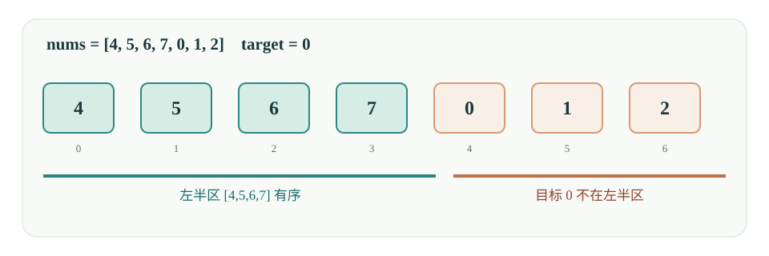
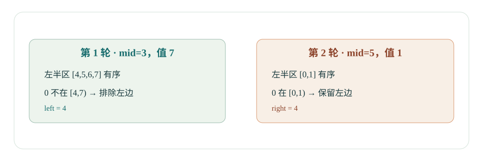
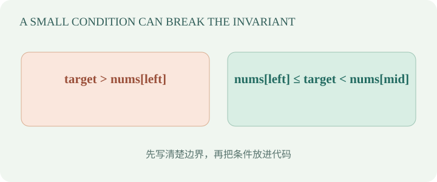

LeetCode 33 · 搜索旋转排序数组
每一步先识别哪一半仍然有序。
中等 Medium18 分钟Rotated Array01 · 旋转没有破坏全部有序性
原数组按升序排列且元素互不相同。它可能在某个位置被旋转，例如 [0,1,2,4,5,6,7] 旋转后变成 [4,5,6,7,0,1,2]。给定 target，要求 O(log n) 时间返回下标或 -1。
整个数组不再全局有序，但旋转只制造一个下降断点。任意选择中点后，左半区或右半区至少有一半仍然保持普通升序。

02 · 判断哪一半有序
先处理 nums[mid] == target。否则：
- 若 nums[left] ≤ nums[mid]，左半区有序。若 nums[left] ≤ target < nums[mid]，目标在左边；否则目标只能在右边。
- 否则右半区有序。若 nums[mid] < target ≤ nums[right]，目标在右边；否则目标只能在左边。
如果 target 存在，它始终位于当前闭区间 [left,right]。每轮利用一半有序的事实判断 target 是否落入该半区；若不在，就安全排除这一整半。
03 · 逐步执行
nums = [4,5,6,7,0,1,2]，target=0。第一轮左半区有序但不包含目标；第二轮左半区变成 [0,1]，目标落在其中。

left=0、right=6、mid=3。nums[left] <= nums[mid]，所以左半区 [4,5,6,7] 有序；target=0 不在 [4,7) 中。
sorted half = left · discard 0..3
04 · 为什么可以安全丢掉一半？
由于数组由一个升序数组旋转得到，唯一的下降断点只能落在左半区或右半区之一。因此以 mid 切分后，至少有一半不跨越下降断点，是普通升序区间。
若左半区有序，target 落在 [nums[left], nums[mid]) 当且仅当它可能在左半区；若不落在这个范围内，左半区不可能包含 target，可以排除。右半区有序时同理，判断 target 是否在 (nums[mid], nums[right]]。每轮至少排除 mid 一侧的候选，区间不断减半，故时间为 O(log n)。
05 · Python 参考实现
class Solution:
def search(self, nums: list[int], target: int) -> int:
left, right = 0, len(nums) - 1
while left <= right:
mid = left + (right - left) // 2
if nums[mid] == target:
return mid
if nums[left] <= nums[mid]:
# 左半区 [left, mid] 有序
if nums[left] <= target < nums[mid]:
right = mid - 1
else:
left = mid + 1
else:
# 右半区 [mid, right] 有序
if nums[mid] < target <= nums[right]:
left = mid + 1
else:
right = mid - 1
return -1
| 维度 | 结论 | 原因 |
|---|---|---|
| 时间 | O(log n) | 每轮排除一半候选。 |
| 额外空间 | O(1) | 只维护三个下标变量。 |
| 关键前提 | 元素互不相同 | 保证能识别至少一半有序。 |
06 · 不要忽略“元素互不相同”
本题的唯一值假设非常重要。如果数组允许重复值，nums[left]、nums[mid] 和 nums[right] 可能相等，单凭端点就无法判断哪一半严格有序。重复值版本通常需要额外收缩边界，最坏时间可能退化为 O(n)。
